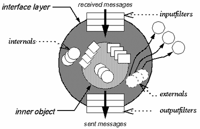
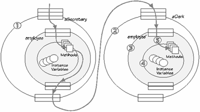

Объектно-ориентированный подход и современные мониторы транзакций
Объектно-ориентированный подход и современные мониторы транзакций
В. Индриков, АО ВЕСТЬОбъектно-ориентированный подход и мониторы транзакций? А где, собственно, связь? Если с ООП все, вроде бы, ясно, то мониторы - вопрос темный, да и, кажется, вообще из другой области. Зачем они вообще? "А затем," - отвечают нам, - "чтобы обеспечить высокую пропускную способность системы и повышает ее устойчивость к сбоям." "Помилуйте," - локтем отодвигает предыдущего оратора создатель сервера баз данных, - "мы это и без них прекрасно умеем - и на кластерах работаем, и транзакции мониторим." Тут вам и диспут, и острота схватки. Говорят и такое: "Многие ..., кто ... выбирает мониторы транзакций, применяет их не по назначению. Не так часто мониторы транзакций используются ради того, для чего они и предназначены, конкретно - поддержки сотен или тысяч одновременно работающих пользователей - такие внедрения составляют не более 1% рынка. Все остальные примеры свидетельствуют о том, что мониторы занимаются асинхронной передачей сообщений или играют роль связующего программного обеспечения в разнородных средах." (DATABASE Journal, N2 1996 стр. 77, перевод мой).
В этом изречении содержится, как минимум, две мысли. Первая - есть альтернативы мониторам транзакций. Вторая, спорная - мониторы предназначены для обработки тысяч транзакций на одной системе и ничего более. Самое забавное, что и те, кто продает мониторы, чаще всего думают также. И спорю с ними не я, а как раз те, кто применяет эти мониторы, и, если верить тексту, 99% пользователей использует их отнюдь не ради тех возможностей, которые "и так присутствуют в серверах БД." Я даже позволю себе предположить, что они, пользователи, нуждаются в мониторе транзакций, поскольку тот является средой разработки распределенных приложений. Средой, которая, очевидно, имеет какие-то плюсы.
И я даже готов был бы согласиться с тем, что среда эта не является объектно-ориентированной, если бы не обратившее на себя внимание пугающее сходство CSI (Client/Server Interactions) диаграмм в документации на монитор TopEnd и диаграмм сценариев в объектно-ориентированных методах Буча и Fusion. Речь не о принципиальном сходстве, это полбеды, а об изобразительном - повернув CSI на девяносто градусов против часовой стрелки, вы не найдете разницы, обозначения убийственно идентичны.
Причина в том, что, как только разговор выходит за рамки отношений между классами, а точнее, единственного, пожалуй, рассматриваемого в них вида отношений (наследования), большинство из ныне здравствующих ОО методов (почему-то их постоянно пытаются называть методологиями) предлагают набор изобразительных средств, существенно превосходящий по возрасту ОО подход - сценарии и диаграммы перехода состояний, анализ доменов и т.д. Причем в 3 из 5 случаев оказывается, что наследование существует само по себе, а все остальное - в стороне. Блистательным, с моей точки зрения, примером конгломерата из слабо связанных между собой подходов является метод Гради Буча. Наследование объявляется ключом к объектно-ориентированному подходу, все остальное - "недоразвитым", объектно-базирующимся подходом (вот вам еще одна загадка - что лучше, базироваться на объектах или ориентироваться на них?), и в то же самое время Рамбо (метод OMT) является одним из немногих, кому пришла в голову нестандартная мысль - сценарии и диаграммы перехода суперкласса должны наследоваться в подклассах. Между тем, даже и в этом случае мы далеки от разрешения всех проблем - имеет место эффект расщепления состояния в подклассе (state partitioning - S.Matsuoka, K.Wakita, A.Yonezawa, Inheritance Anomaly in Object-Oriented Concurrent Languages, University of Tokyo, 1991), заставляющий переопределять методы суперкласса. Одной из причин является то, что само понятие "состояние" никак не определяется, поэтому, что означает "унаследовать состояние" или "унаследовать переход", остается за рамками ОО метода. Да и само по себе наследование суть целый букет проблем: self проблема, конфликт с требованием атомарности операций, переписывание (overriding) методов по принципу "все или ничего" вместо декларированного в ООП "уточнения", трудности с интеграцией с СУБД, трудности в реализации множественных представлений (views) и координированного выполнения и т.д. (см, например, M.Askit, M.Bergmans Obstacles in Object-Oriented Development, TRESE Project, University of Twente; H. Lieberman, Using Prototypical Objects to implement shared behavior, OOPSLA '86).
 Илл. 1Крайне интересной попыткой разрешить многие из трудностей с реализацией наследования и на деле позволить применять ООП в больших программных проектах (programming in large), является модель CFOM (Composition-Filters Object Model), разрабатываемая в Университете Твенте, Нидерланды. Она доводит до кристальной чистоты старую идею, гласящую, что сообщения, передаваемые объекту, и методы, обрабатывающие эти сообщения - не обязательно одно и то же, а сообщение представляет самостоятельный интерес. CFOM разводит объект-ядро (kernel object) и интерфейс. Объект-ядро полностью инкапсулирован, его структура недоступна извне, открыты только методы, но и те - не для всех, а только для интерфейса, являющегося своего рода оболочкой объекта. Интерфейс может содержать объекты (секция internals) или ссылки на внешние объекты (externals), а также фильтры. Фильтры задают правила обработки входящих (inputfilters) и, мало того - исходящих (outputfilters) сообщений (Ошибка! Источник ссылки не найден.). В простейшем случае сообщение передается ядру на выполнение, и выглядит это так: inner.doSmth. Inner - это и есть ядро. В общем же случае сообщение, попав в сито фильтров, может быть также модифицировано либо переадресовано одному из объектов, определенных в теле интерфейса, или внешним объектам.
Модель CFOM смело можно отнести к числу "недоразвитых" - вводя понятие объекта и класса, ее создатели отказались от введения отношений наследования. Сделано это по причинам, кратко уже упомянутым выше, и развернутое описание которых займет слишком много места. Каким же образом создатели CFOM ухитряются обойтись без наследования? Очень просто - включение и делегирование. Если вы хотите, чтобы объект objA класса A предоставлял и сервис класса B, вы включаете объект objB класса B в секцию internals интерфейса и помимо возможных прочих фильтров указываете такой: {inner.*, objB.*}. Понять, что делает этот фильтр, легко - все сообщения ('*' и означает "все"), распознаваемые ядром, передавать ядру, все сообщения, распознаваемые объектом objB (т.е. все сообщения класса B), передавать objB. С печально известными проблемами множественного наследования здесь сталкиваться не приходится - фильтры выполняются слева направо и сверху вниз. Если набор методы A и B пересекаются, и вы хотите, чтобы сообщение mess1 обрабатывалось в B, а не в A, то фильтр становится таким: {objB.mess1, inner.*, objB.*}. Если objB объявлен в секции externals, то это ссылка на внешний объект, и в этом случае фильтр {..., objB.*, ...} будет реализовывать делегирование в чистом виде.
На самом деле синтаксис фильтров несколько более сложен, и важную роль играют здесь условия (conditions) - особая группа методов ядра, не имеющих параметров и вырабатывающих значение булевского типа. Тот или иной фильтр может срабатывать или быть проигнорирован в зависимости от условий. Введение условий позволяет в рамках одной модели описать и переходы состояний - изменение состояния объекта и даже история изменения состояний объекта может находить свое отражение в изменении условиях, а те будут задавать тот или иной сценарий обработки сообщений. Введены также псевдопеременные: sender (№1 на Илл. 2) - идентифицирует объект, пославший сообщение; упоминавшаяся уже inner (№4 на Илл. 2) - ядро, т.е. собственно реализация той или иной совокупности сервисов; self - означает то же самое, что и self в Samlltalk или this в C++ - ссылка на сам объект в теле программного кода, принадлежащего этому объекту; message (№5) - метаданные, т.е. имя сообщения и список аргументов; server (№2) - объект, который первым принял сообщение. В приведенном выше примере сервером является объект objA. Если бы objA в свою очередь был бы включен в интерфейсную часть объекта objX (неважно, где бы он был объявлен - в секции internals или externals), то сервером стал бы objX. Сообщение, проходя через множество фильтров, может много раз поменять "направление", однако значение server не изменится. Данная псевдопеременная помогает объекту разобраться, в каком контекcте он получает сообщение. Например, public и private, реализованные в C++, легко воспроизводятся с использованием server.
 Илл. 2CFOM позволяет описать как статические свойства объекта, так и динамически изменить их. Во всяком случае self и inner могут быть статически связаны компилятором, а sender и server - в том случае, если они представлены константами. CFOM представлена языком Sina (по имени Ибн Сины), а тот, в свою очередь, реализован в рамках среды Smalltalk. Между тем, ничто не мешает использовать CFOM как метод моделирования. Метамодель CFOM в принципе может быть представлена средствами другой ОО модели, и выбрав CASE пакет, позволяющий писать скрипты для обработки метаданных, например, Rational Rose (методы Booch, OMT, UML) или ParadigmPlus (компания Platinum - Booch, OMT, UML, Fusion, Shlaer/Mellor, Martin/Odell OOIE, Coad/Yourdon), можно искусственно расширить оную, "другую", модель средствами CFOM (вот только готовы ли вы отказаться от наследования?).
Чем так удивительно хороша CFOM? Тем, что она позволяет изолировать друг от друга вещи несвязанные, и которые, тем не менее, оказываются поневоле перемешаны в одном и том же программном коде. Ядро в CFOM - это суть объекта, то, что он делает, все его прикладное наполнение, если угодно - бизнес-логика. Все остальное вынесено вовне: коммуникации между объектами, делегирование (читай - диалоги) выполнения тех или иных функций внешнему, в том числе и удаленному объекту, синхронизация и обеспечение конкурентного режима, динамическое преобразование сообщений и множественные представления (view). Поясним это на примерах:
Начнем с последнего - в зависимости от условий (conditions), а также от того, какой именно объект (sender) посылает запросы, принимающая сторона может в простейшем случае открывать или закрывать те или иные слоты, а в случае более сложном - динамически изменять цепочку обработки сообщения. Здесь вам и разграничение прав доступа, и базы данных, и модная ныне тема - деловые процессы (они же документооборот).
Необходимо заставить объект objB посылать сообщение не локальному внешнему объекту objC (класс C), а такому же, но удаленному, objCRemote. Включив objB в objA и задействуя в последнем фильтрацию исходящих сообщений, вы, не изменяя кода objB, организуете распределенные вычисления.
Объект objCRemote (напоминаю - класса C) может обслужить одновременно не более одного обращающегося к нему по сети клиента. Рассмотрим объект objM, принимающий все предназначенные objCRemote сообщения, организующего одну или множество очередей запросов и передающего эти запросы одному или нескольким объектам класса C. В результате будет обеспечен либо последовательный доступ к сервису класса C (множество клиентов - один экземпляр класса C), либо параллельный (каждому клиенту - собственный экземпляр), либо смешанный (экземпляров меньше, чем клиентов, запросы буферизуются)
Все посылаемые сообщения предварительно протоколируются
Необходимость изменения любого из аспектов - параллелизм, синхронизация, сценарий, замена локального вызова на удаленный - требует изменения лишь локального участка модели или кода, остальные не затрагиваются. Между тем, если вы пишете на Ada, то прикладная логика перемешана с логикой распараллеливания и синхронизации. А если вам захочется переписать программу на предмет возможности использования DCE/RPC, то заранее примите мои соболезнования.
Ну а мониторы-то тут причем? Или автор пытается подражать О'Генри - ни королей, ни капусты в романе, зато в заголовке - пожалуйста. На самом деле самые внимательные уже смогли найти в капусте (ОО методы) королей (мониторы). Вернемся к примерам 3 и 4. Что такое objM, который принимает от клиентов, протоколирует, буферизует и перенаправляет запросы? Что он, скажите мне, как не монитор транзакций?
И, коль скоро в теме заявлены современные мониторы, то нельзя не вспомнить о предельно современном, а именно - еще в "Памперсах" разгуливающем Microsoft Transaction Server (MTS). Начнем с того, что MTS целиком базируется на архитектуре COM - до удивления близкой рассмотренной выше CFOM (и там, и там расширение возможностей класса осуществляется посредством включения и делегирования - см. выше). MTS является, конечно, не моделью и не ОО методом, а реализацией вполне конкретного подхода. В то же время реализация эта весьма близка к той модели о которой мы говорили, и к тому же выводит наиболее массовую на нынешний момент технологию создания программных компонентов на новый уровень возможностей. Рассмотрим лишь некоторые из фрагментов архитектуры MTS.
Application Component (AC) сосредотачивает в себе прикладную логику. Его смело можно уподобить ядру объекта в CFOM. Ничего относящегося к распараллеливанию, опросу ресурсов и т.д. здесь нет. Пользуясь любым инструментом, позволяющим делать ActiveX компоненты, разработчик создает AC такой же, как и для однопользовательского локального приложения - все проблемы, не связанные с собственно бизнес-логикой, берет на себя монитор транзакций. Приложение, управляемое MTS, может работать с разными видами ресурсов, различаются два вида последних: Resource Managers (RM) и Resource Dispensers (RD). Разница в том, что RM устойчив к сбоям (последняя буква в ACID - atomicity, consistency, isolation, durability), а RD - не дает никаких гарантий, т.е. это ресурс "вообще". В качестве интерфейса к ресурсам MTS использует все тот же OLE.
Похожую концепцию предлагают и другие мониторы, такие как IBM Transaction Server и NCR TopEnd. Начнем с TopEnd. Созданный компанией NCR (изначально - под другим названием) и радикально переработанный где-то в 91-м, компанией, которая трудится с 60-х, и разные мониторы которой стоят на 40000 серверов, TopEnd учитывает сложившиеся реалии: клиент-сервер и графические станции - с одной стороны, а неуничтожимые мейнфреймы, терминалы и DOS - с другой. TopEnd предлагает два вида серверов - managed server (MS) и standard server (SS). SS служит исключительно целям поддержки процесса переноса уже имеющегося сервера приложений, разработанного каким-либо иным способом, на монитор TopEnd. Работать с SS - занятие достаточно утомительное, поскольку распараллеливанием обслуживания запросов в этом случае занимается сам программист. Другое дело MS - ведь он же "managed", т.е. его выполнением управляет сам монитор. MS выглядит практически так же, как и любая другая функция, написанная на C. Он подключается к TopEnd, и всей его дальнейшей жизнью управляют двое - TopEnd и администратор системы.
IBM Transaction Server двуглав, как российский герб. С одной стороны это Encina, монитор, также разработанный в начале 90-х компанией Transarc (являющейся теперь частью IBM) и реализующий архитектуру OSF/DCE. С другой стороны это CICS, известный монитор IBM, установленный на 70000 серверов и мейнфреймов. Если добавить сюда IMS-TP, TPF и Encina, то дух захватывает от числа инсталляций у IBM. Transaction Server базируется на сервисах и ядре Encina, обеспечивая в то же время и совместимость с CICS. В любом случае разработчику доступны и CICS, и Encina в "чистом виде". Encina работает с любым XA ресурсом, но не только. Например, входящая в базовый набор структурированная файловая система (SFS) не является XA ресурсом. SFS представляет из себя некоторую комбинацию DCE файловой системы с ISAM. Немного отклоняясь в сторону, скажу, что перенос наработок с Fox, Clipper, Paradox, Btreive на Encina и SFS существенно проще, чем на реляционный сервер БД. Encina и Microsoft оказываются в некотором смысле даже ближе , чем можно ожидать. В Encina используется язык описания интерфейсов (IDL), принятый в OSF/DCE при работе с удаленным вызовом процедур (RPC). Microsoft реализовал DCE/RPC в самой первой версии Windows NT, и IDL, используемый при описании COM интерфейсов (отчасти и CORBA IDL) более, чем близок к DCE/RPC IDL. Таким образом, некий набор сервисов рассматривается в Encina как целое, как интерфейс, и несложно показать, как увязать технику программирования данного монитора транзакций с ОО подходом CFOM (возможно, и каким-либо еще). В TopEnd нет понятия интерфейса, однако сервисы тоже не рассыпаны сами по себе. Существуют по сути очень близкое понятие product - совокупность сервисов (функций), помимо этого - function (например, "оформить билет") и function qualifier. Квалификатор функции - не более, чем номер, однако вносит особый шарм. Как оформление билета, так и продажа фунта изюму со склада и т.д. - операция, занимающая не один шаг. Наличие квалификаторов позволяет не создавать на каждый из них по собственной функции, а поделить на шаги единственную.
Итак, оставим в стороне разговоры о производительности и надежности - мониторы транзакций упрощают жизнь разработчику. Я ненамного перегну палку, если скажу, что человек, приступающий к созданию банковской, складской, бухгалтерской и т.д. задачи думает о ее функциональности, а не о том, как она будет работать в сети. То есть он пишет однопользовательскую по сути программу. В результате она прекрасно работает для, скажем, трех пользователей. А вот потом начинаются проблемы. Серьезным образом переработать приложение не удается, потому что параллельно с решением задачи производительности обычно требуется и доводить логику. Мониторы же (как минимум - рассмотренные выше) позволяют вынести все эти заботы на администратора системы. Мне как-то подсказали интересную аналогию - программирование для Windows. В одном случае вы должны писать WinMain и т.д., самостоятельно обрабатывать входящие сообщения. Используя же Delphi, VB, PowerBuilder или специально разработанную библиотеку C/C++ вы будете создавать обработчики событий (причем только тех, которые вас интересуют), не заботясь о том, откуда они берутся. Очень похоже
Серверы баз данных со всем справляются сами? Не думаю. Даже с мониторингом собственных ресурсов. Существует (и неплохо) компания Platinum, поставляющая, нет не мониторы транзакций, а утилиты для серверов БД, которые делают, казалось бы, все то же самое, что и штатные средства. Но при ближайшем рассмотрении оказывается, что не то: мониторинг более глубокий, статистика более детальная (как, например, насчет того, чтобы увидеть в реальном времени, что происходит в журнале транзакций?); средства администрирования глубже; наконец, то, чего просто нет у самого производителя СУБД. А даже сравнивая между собой только мониторы, которые, казалось бы, делают одно и то же, выясняешь, сколь по-разному можно это делать. О сравнении с СУБД и говорить нечего. Есть серверы БД, отводящие на каждое подсоединение 50КБ, есть те, что отводят 250КБ, а есть и такие, что отдают по 2МБ - так с каким сравнивать? Есть и ограничения, которые не слишком о себе заявляют, пока речь идет о централизованной задаче, например, пространство имен. О Microsoft TS говорить до появления Cairo преждевременно, но о других можно. TopEnd предлагает единое (вся сеть - один домен) глобальное пространство имен - вы обращаетесь к сервису, не зная, на каком сервере он "хранится" и будет выполняться. Encina интегрирована со службой каталогов DCE - CDS и позволяет, в случае необходимости разбивать сеть на ячейки, однако и в этом случае речь идет об именах, а не о "месторасположении сервиса". В случае РСУБД мы имеем нечто похожее на "имя_сервера.имя_базы(или схемы).имя_владельца.имя_таблицы(или хранимой процедуры". Репликация процедур смягчает, но не снимает эту проблему, а она о себе непременно заявит в большой и распределенной задаче.
Еще пример, связанный со временем жизни приложения. В связи с новым постановлением изменяется порядок расчетов (начисления и т.д.) чего-нибудь. Транзакции, начинающиеся с 1 апреля, проходят по новой схеме. В то же время начатые раньше этой даты, завершаются по старой. В этом случае до завершения всех "старых" транзакций, вы имеете дело с разными версиями сервиса, а не с разным сервисом. Имея доступ к метаинформации , конкретно - о дате посылки сообщения, начала транзакции и т.д., вы сможете решить эту проблему достаточно безболезненно. Имеете ли вы такую возможность в РСУБД? Или вам придется, чертыхаясь, срочно переделывать приложение и сопровождать его в этом виде в течение времени завершения всех "старых" транзакций. А потом, холодея, вы будете ждать нового изменения? А можете ли вы управлять на программном уровне общей памятью? А как насчет разграничения доступа - в Encina, например, реализовано 6 уровней плюс седьмой, если в системе установлена среда DCE. Плюс шифрация, включая использование собственных алгоритмов. Итак - пока РСУБД не будут решать соответствующие вопросы (не "для галочки", а на деле), говорить о том, что они "лучше" мониторов транзакций, рановато.
Еще один вопрос - "другие" средства middleware, "делающие ненужными мониторы". Во-первых, это появляющиеся в новых версиях пакетов для разработки front-end программ средства создания серверов приложений. Эта альтернатива действительно интересна, но не выше уровня рабочей группы. В дополнение к перечисленным выше ограничениям здесь мы не видим поддержки безотказной работы и балансировки нагрузки. По поводу серверов приложений в архитектуре CORBA можно сказать одно - сама по себе эта архитектура не является альтернативой, напротив - требует наличия монитора (как минимум, в виде соответствующих сервисов), но только на этот раз - CORBA совместимого. Хорошим примером является Microsoft - владея полностью технологией COM (OLE), компания почему-то создает именно монитор транзакций. Ну а Encina работает с SOM (реализация CORBA от IBM).
В числе других "убийц" чаще всего называют ПО передачи сообщений. Так вот MOM (message -oriented middleware) не предоставляет технологии создания серверов приложений - речь идет только о гарантированной доставке сообщений, доставке в оговоренный интервал времени, частичной поддержке транзакций. Но кто (что) укладывает сообщения в очереди и кто занимается их выборкой - это вне компетенции MOM. Оно либо должно быть внедрено в СУБД, монитор транзакций и т.п., либо работать совместно с ними или какими-либо другими серверами приложений. Есть примеры и того, и другого - опция Recoverable Queuing System (RQS) для TopEnd, и Recoverable Transaction Queuing (RTQ) - неотъемлемая часть Encina. RTQ и RQS обеспечивают отложенное выполнение запроса. Компания IBM поставляет MQSeries - в чистом виде MOM - наверное, чтобы убить Encina. Ну, а если всерьез, то MQS чаще всего служит для связывания между собой разных мониторов или иных серверов приложений. TopEnd никогда не будет работать с RTQ, а Encina - с RQS. А MQSeries, являясь с точки зрения монитора транзакций XA-ресурсом, может их объединить, "приклеив" также Lotus Notes, приложение, разработанное на Distributed PowerBuilder или Distributed Visual Basic. После появления MQS для Windows'95 речь уже заходит о поддержке мобильных клиентов (мониторы этого не могут). MQS поддерживает собственные транзакции, однако распределенные, вовлекающими несколько узлов - нет, и в роли координатора может выступать монитор. Таким образом, MQS может быть существенным подспорьем монитору в плане поддержки отложенного, асинхронного в полном смысле, выполнения (отложенного - не обязательно на послезавтра, речь может идти и о десятой доле секунды) как между сервером и сервером, так и между клиентом и сервером. MQS может использоваться в качестве интегрирующей среды между другими классами серверов приложений. Однако альтернативой мониторам транзакций MOM не является, что подтверждается простым сравнением функционального набора того и другого.
Таким образом, мониторы транзакций живы и, судя по всему, будут жить, пусть даже и в другом обличье. Мониторы транзакций являются не только средством поддержки, мониторинга и администрирования времени выполнения. Современные мониторы транзакций предоставляют очень надежную (с точки зрения технологии программирования) платформу разработки приложений. Проблема в том, для приложений из 5 экранных форм сказывается непривычность. А вот выигрыш сказывается позже и в по-настоящему сложных системах. Данная платформа разработки не является объектно-ориентированной в общепринятом смысле - нет речи о классах и наследовании. Однако она перекликается с наиболее продуманными ОО методами. Она близка последним не по букве, но по духу. В конечном итоге это и является главным, так как и многочисленные создатели ОО методологии, и создатели мониторов транзакций пытаются решить проблему создания приложений функционально сложных, распределенных, разнородных и сохраняющих свою жизнеспособность в течение долгого времени.
ВЕСТЬ АО
115446, Москва, Коломенский проезд,1а
тел: (095) 115-6001, факс: (095) 112-2333
www.vest.msk.ru